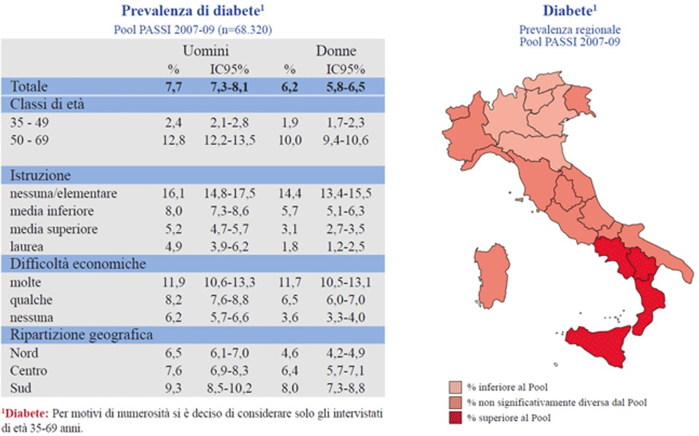
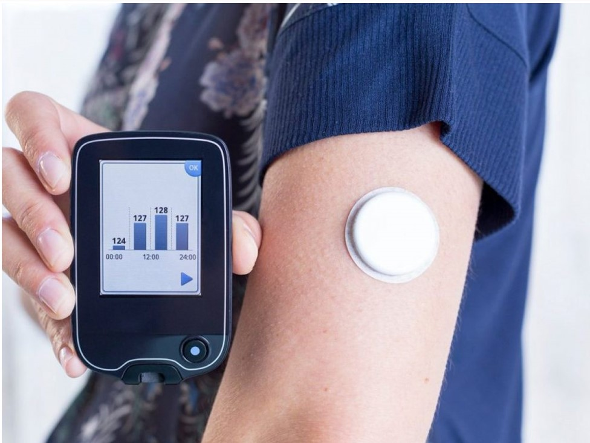
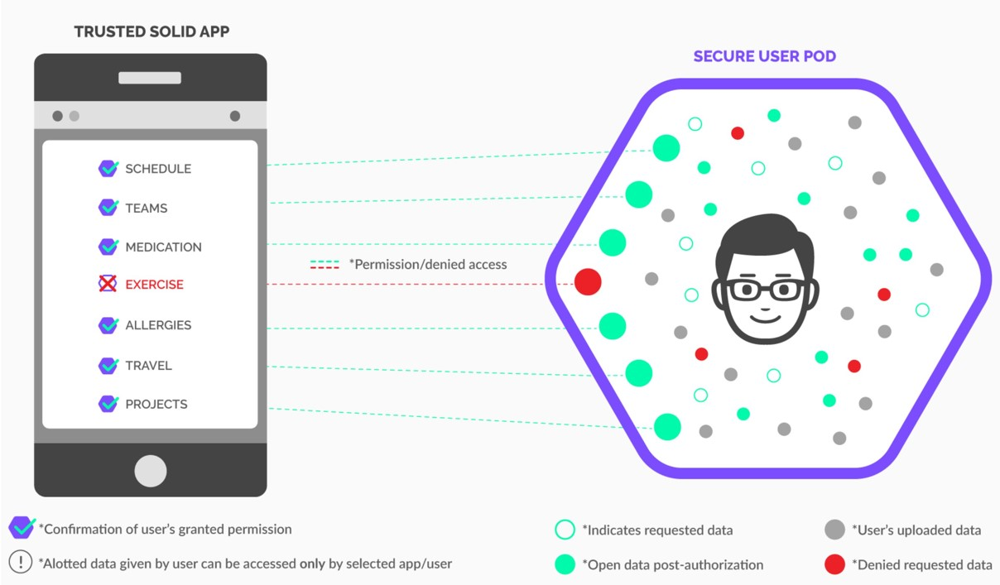

According to ISTAT data published in 2022, diabetes is a chronic, progressive, and disabling disease affecting between 6% and 8% of the Italian population. Managing diabetes effectively requires periodic monitoring of various health indicators to control risk factors and prevent complications that can significantly impact mortality and quality of life.
The healthcare sector has increasingly adopted wearable devices, IoT sensors, and other monitoring technologies to collect health parameters for risk assessment and decision support in diabetes management. AI-driven solutions and rule-based approaches (IF-THEN-ELSE) have been used to process data and assist healthcare professionals in optimizing treatment strategies.
The DiaBeCo project aims to develop a digital platform integrating cutting-edge technologies such as:
The project’s innovative potential lies not only in real-time monitoring of vital and health parameters but also in leveraging predictive Federated Learning models to anticipate hypoglycemia and hyperglycemia episodes. This approach ensures timely interventions, preventing severe complications.
Utilizing Digital Twin technology allows for personalized recommendations, optimizing insulin therapy, nutrition, and physical activity, ultimately improving treatment effectiveness and reducing long-term complications. Additionally, minimizing the management burden on diabetic patients enhances their quality of life and alleviates concerns related to disease management.
